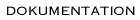

Dokumentation
Teknisk dokumentation.
Vad har hittills skett ?
(logg över förändringar som gjorts)
Installationstips för Bifrost
för något äldre Bifrost-system, men fortfarande användbar
Lista över lämplig hårdvara
Tom Johans
<Tom.Johans@_NO_SPAM_data.slu.se>
Last modified: Wed Mar 13 16:08:58 2002